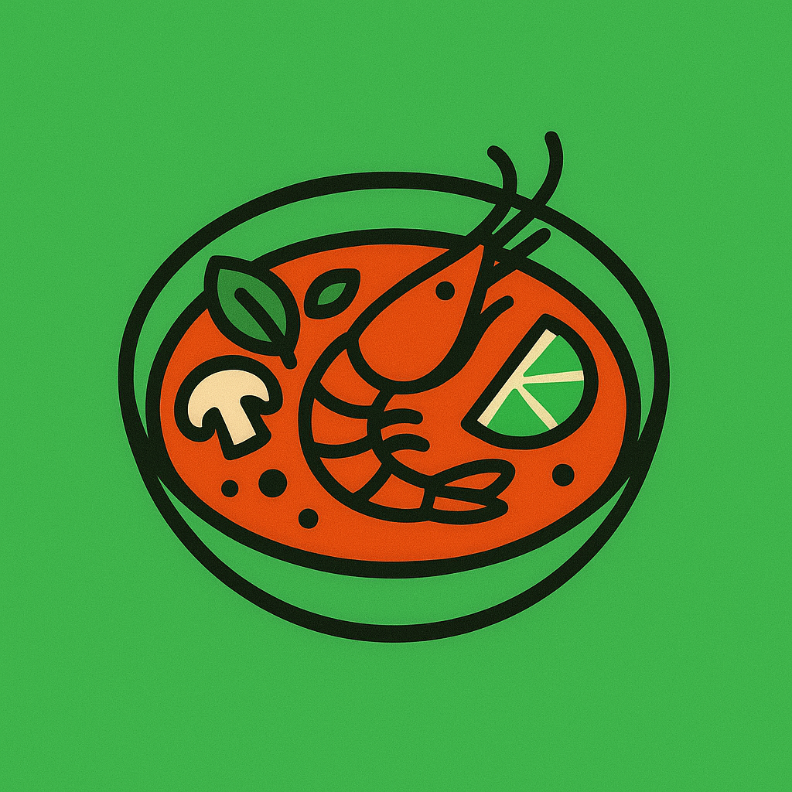
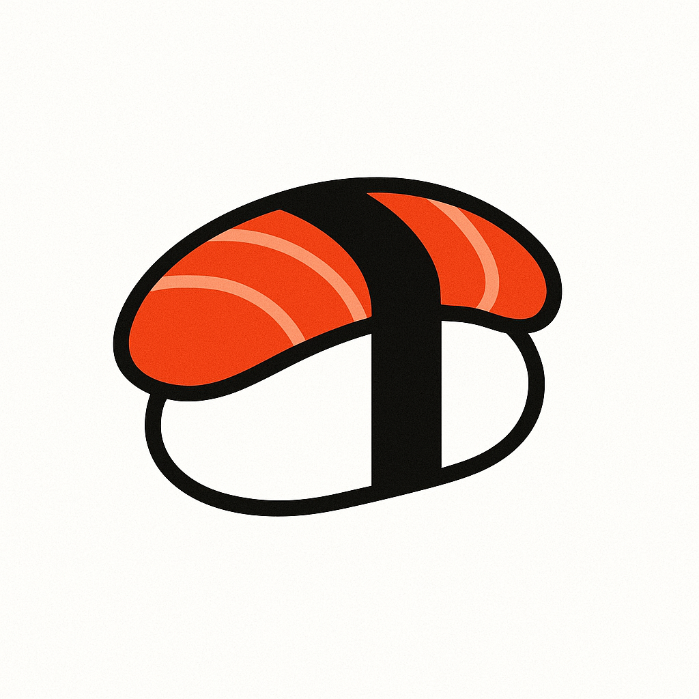
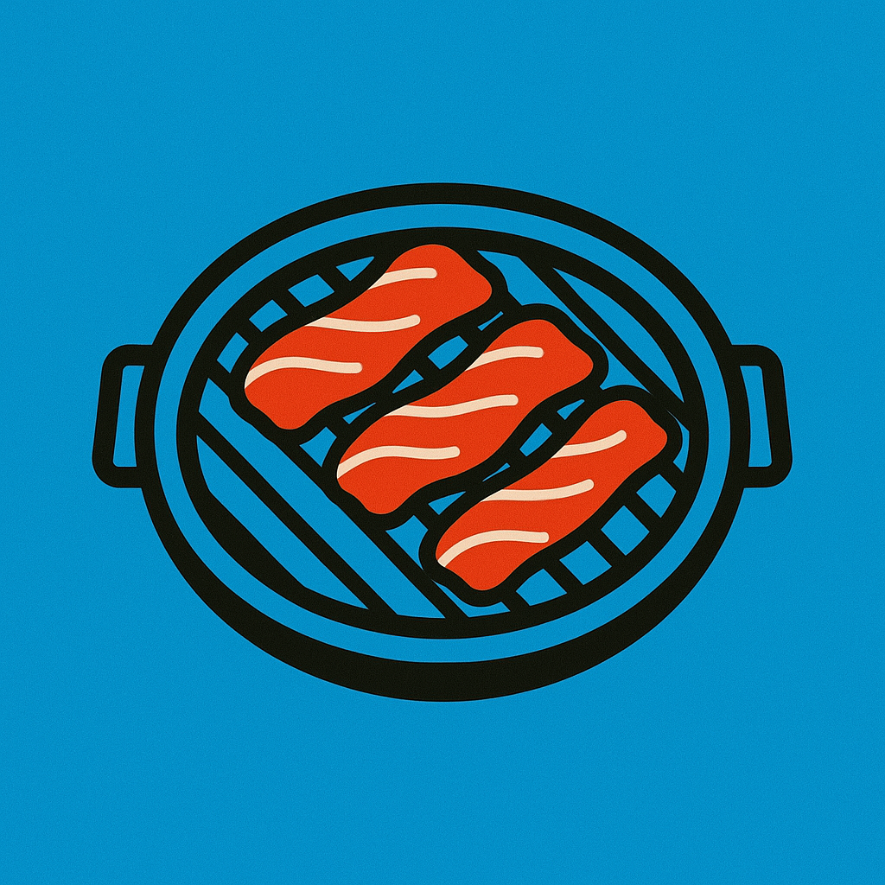

Thai
Japanese
KoreanAustralia is a multicultural nation of immigrants, with a culinary style that blends culinary traditions from around the world. This project aims to visually showcase the differences in culinary preferences between states, aiming to provide a quick and engaging overview for the average Australian reader – whether you’re deciding where to eat, exploring cultural diversity, or simply curious about local flavors.